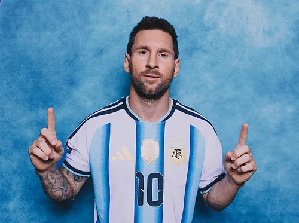

Lionel Andrés Messi Cuccittini, nascido em 24 de junho de 1987 em Rosário, Argentina, é um futebolista amplamente considerado um dos maiores da história, atuando atualmente como atacante no Inter Miami. Com 1,70 m de altura e pé canhoto, ele superou uma deficiência de crescimento na juventude para se tornar o maior artilheiro do FC Barcelona, clube onde permaneceu de 2004 a 2021, conquistando 10 La Ligas, 4 Ligas dos Campeões e um recorde de 8 Bolas de Ouro. Após duas temporadas no Paris Saint-Germain, Messi liderou a Seleção Argentina à vitória na Copa do Mundo de 2022, recebendo também o prêmio de melhor jogador do torneio, título que completou seu palmarés internacional após a Copa América de 2021 e a medalha de ouro olímpica em 2008. Casado com Antonela Roccuzzo desde 2017, o jogador tem três filhos e é conhecido por sua discrição, sendo apelidado de "La Pulga" e "El Mesías"